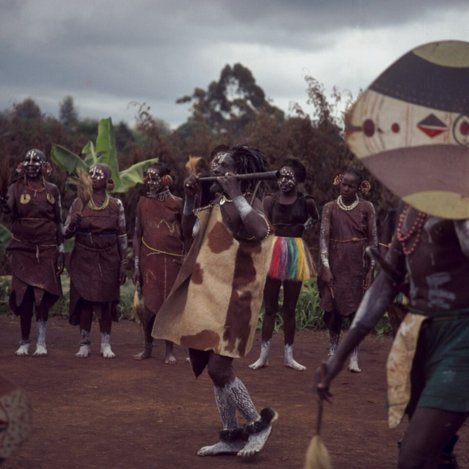
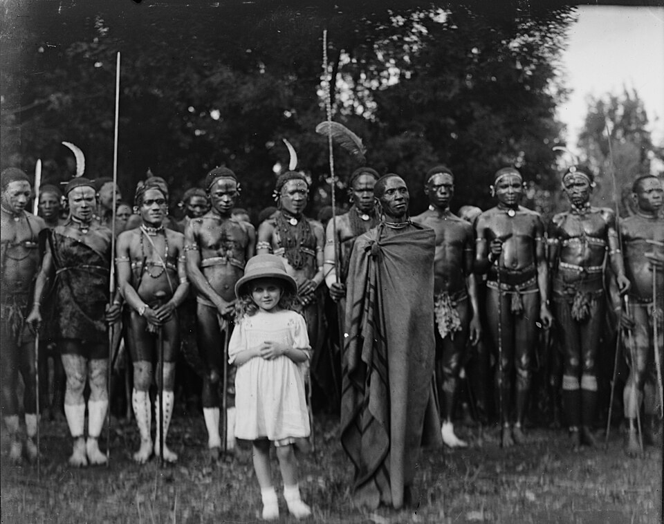
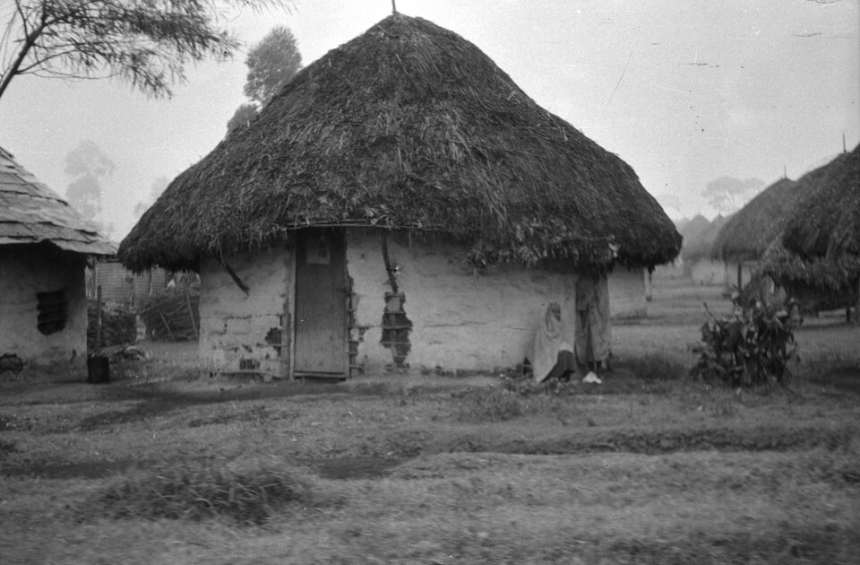

Central Mount Kenya · 01
The Agikuyu
Rooted in the slopes of Mount Kenya, a story of land, language and belonging.
A living profile
Guardians of the highlands
The Agikuyu story is carried through family, farming, craft and the enduring presence of Kirinyaga.
HeartlandCentral KenyaMount Kenya and the central highlands
LanguageGikuyuA Bantu language with rich oral traditions
LivelihoodsFarmingTea, coffee, food crops and livestock
ValuesLand & kinshipCommunity, ancestry and stewardship



Oral history, initiation, agricultural knowledge and the Gikuyu language form a connected map of identity. The name Agikuyu refers to the people; Gikuyu is the language.
What to explore
Look closer at how land, family and storytelling connect across generations.
- Mount Kenya as a spiritual and ecological landmark
- Intergenerational knowledge of farming and craft
- Proverbs, naming and oral histories